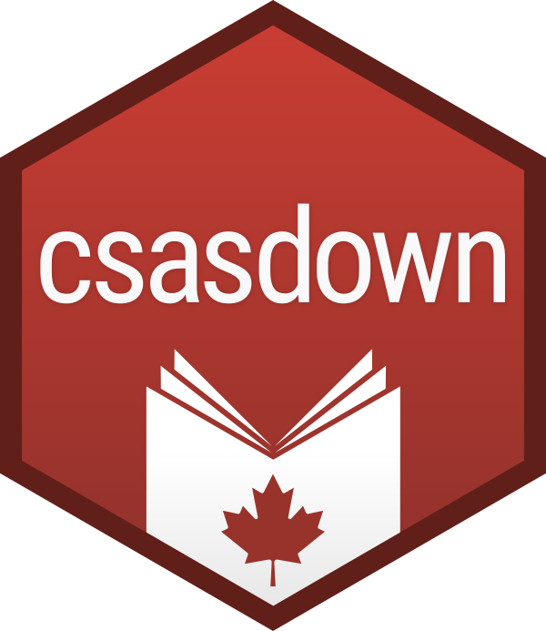

CLAUDE.md
This file provides guidance to Claude Code (claude.ai/code) when working with code in this repository.
Package Overview
csasdown2 is an R package for creating reproducible CSAS (Canadian Science Advisory Secretariat) documents in .docx format using R Markdown and bookdown. This is a rewrite of the original csasdown package, focused specifically on Word output rather than PDF.
Status: Experimental - not recommended for applied use.
Development Commands
Testing
# Run all tests
devtools::test()
# Or using testthat directly
testthat::test_local()Architecture Overview
Document Types
The package supports two CSAS document types:
- Research Document (resdoc): Full scientific reports with frontmatter, table of contents, and multi-chapter structure
- Science Advisory Report (FSAR/SAR): Shorter advisory reports with specific CSAS formatting requirements
Rendering Pipeline
The package uses a multi-stage rendering process:
-
Project Creation (
draft()inR/draft.R):- Wraps
rmarkdown::draft()to create a new document project - Copies template skeleton from
inst/rmarkdown/templates/{type}/skeleton/ - Creates
index.Rmdand supporting files (chapters, bibliography, etc.)
- Wraps
-
Content Rendering (
render()orrender_sar()inR/render.R):- Calls
bookdown::render_book()to knit R Markdown files - Uses custom output formats (
resdoc_docx()orfsar_docx()) defined inR/*-word.R - These output functions wrap
officedown::rdocx_document()with CSAS-specific settings
- Calls
-
Post-Processing (primarily for resdoc):
- Uses the
officerpackage to manipulate Word documents after initial rendering - For resdoc:
add_resdoc_word_frontmatter()merges title page, citations, abstract, and table of contents from separate .docx files into final document - For fsar: Injects CSAS-specific content (context section, sources, backmatter) and replaces header/footer bookmarks
- Uses the
Output Format Functions
Located in R/fsar-word.R and R/resdoc-word.R:
-
fsar_docx(): Configures officedown output for FSARs -
resdoc_docx(): Configures officedown output for Research Documents
Both functions specify: - Reference .docx template from inst/csas-docx/ - Table and figure caption styles - List styles (ordered/unordered) - Style mappings (e.g., “Normal” → “Body Text”)
Reference Word Templates
Located in inst/csas-docx/:
- fsar-template.docx: Contains CSAS styles, headers with bookmarks for officer replacement
- resdoc-content.docx: Main content template with CSAS styles
- resdoc-frontmatter.docx: Template for title page, TOC, and preliminary pages
- resdoc-blank-content.docx: Style-only template for generating intermediate .docx files
These templates define: - Custom paragraph styles (e.g., “Body Text”, “Caption - Figure”, “Table Caption”) - Header/footer layouts with bookmarks for dynamic text replacement - List styles (“ol style”, “ul style”)
Bookdown Configuration
Each template includes a _bookdown.yml file specifying: - book_filename: Output filename (e.g., “resdoc”, “fsar”) - rmd_files: Order of R Markdown files to merge - delete_merged_file: Cleanup behavior
Two-Stage Word Document Assembly (resdoc)
The resdoc rendering is particularly complex:
- First stage: Bookdown/officedown renders main content to .docx
-
Second stage:
add_resdoc_word_frontmatter():- Extracts YAML metadata from index.Rmd
- Generates temporary .md files for title, citation, abstract
- Converts these to .docx using
rmarkdown::pandoc_convert()with blank reference template - Reads frontmatter template and injects generated content using
officer::body_add_docx() - Replaces bookmark text in headers/footers (region, year, report number)
- Merges frontmatter with main content
- Generates table of contents with
officer::body_add_toc()
FSAR-Specific Processing
For FSARs (render_sar()):
- Pre-processes first content file to inject title, context section, and mandatory CSAS text
- Adds “Sources of Information” section with bibliography
- Adds detailed backmatter (contact info, citation, open government license, Mobius loop graphic)
- Uses officer to replace header/footer bookmarks (region, report number, dates)
- Injects Mobius loop image from external .docx
Key Implementation Details
Package Dependencies
- bookdown: Core multi-file R Markdown rendering
- officedown: R Markdown to Word via officer
- officer: Direct .docx manipulation (headers, footers, merging)
- rmarkdown: Base R Markdown functionality
- yaml: YAML parsing for metadata
- cli: User-facing messages
File Organization
R/
├── draft.R # Project creation
├── render.R # Main rendering functions
├── fsar-word.R # FSAR output format
└── resdoc-word.R # Resdoc output format + frontmatter assembly
inst/
├── csas-docx/ # Word template files
└── rmarkdown/
└── templates/ # Document templates
├── fsar/
└── resdoc/
tests/
└── testthat/
└── test-rendering.R # End-to-end rendering testsImportant things to remember
If you build the resdoc and are trying to read the output, the resulting .docx has multiple parts. The main part is in word/tmp-content.docx.
Don’t forget to re-install the package after any changes before testing.
Keep code comments to a minimum.
Favour clean, maintainable, minimal code.
You can run a test build of a resdoc from tests/testthat/test-rendering.R.
Whenever you finish fixing something or adding a feature, always increment the version number on line 3 of DESCRIPTION. E.g.
Version: 0.0.0.9008
becomes:
Version: 0.0.0.9009
Then add a bullet at the top of NEWS.md (below the header).